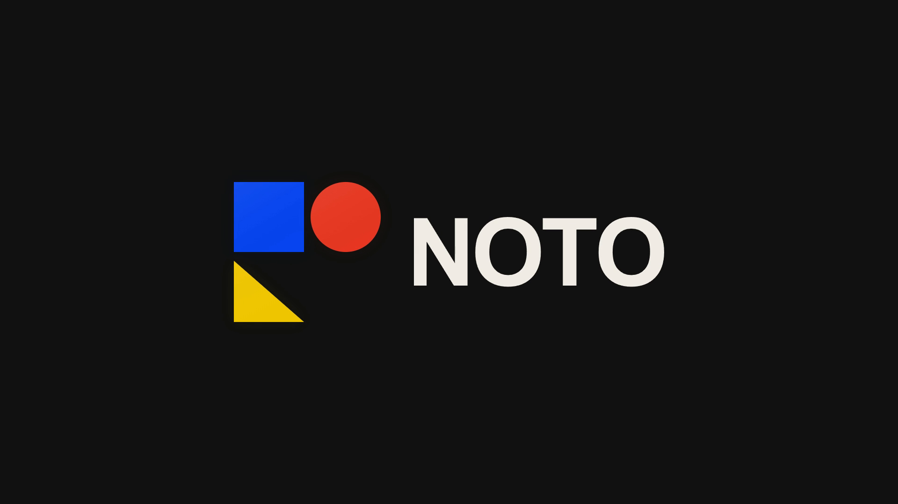

<!doctype html>
<html lang="de">
<meta charset="utf-8">
<meta name="viewport" content="width=device-width,initial-scale=1">
<title>NOTO · Logo Reveal</title>
<style>
  :root{color-scheme:dark;font-family:Arial,sans-serif;background:#101110;color:#f1eee5}
  *{box-sizing:border-box}body{margin:0;min-height:100svh;display:grid;place-content:center;padding:24px}
  main{width:min(1200px,calc(100vw - 48px))}video,img{display:block;width:100%;aspect-ratio:16/9;object-fit:contain;background:#101110}
  #still{display:none}footer{display:flex;justify-content:space-between;align-items:center;gap:20px;margin-top:24px;font-size:13px;color:#b9b9aa}
  button{color:#f1eee5;background:transparent;border:1px solid #494a42;padding:10px 16px;cursor:pointer}button:focus-visible{outline:2px solid #8baaff;outline-offset:4px}
  @media(prefers-reduced-motion:reduce){video{display:none}#still{display:block}}
</style>
<main>
  <video id="reveal" muted loop playsinline preload="auto" poster="noto-logo-poster.png" aria-label="NOTO: Blaues Quadrat, roter Kreis und gelbes Dreieck setzen sich zum Logo zusammen.">
    <source src="noto-logo-reveal.webm" type="video/webm">
    <source src="noto-logo-reveal.mp4" type="video/mp4">
  </video>
  
  <footer><span>NOTO · Logo Reveal · 3 s · 1080p · 60 fps</span><button id="toggle" type="button">Abspielen</button></footer>
</main>
<script>
  const video=document.querySelector('#reveal');
  const toggle=document.querySelector('#toggle');
  const reduced=matchMedia('(prefers-reduced-motion: reduce)');
  video.addEventListener('play',()=>toggle.textContent='Pause');
  video.addEventListener('pause',()=>toggle.textContent='Abspielen');
  toggle.addEventListener('click',()=>{
    document.querySelector('#still').style.display='none';video.style.display='block';
    if(video.paused)video.play().catch(()=>{});else video.pause();
  });
  if(!reduced.matches)video.play().catch(()=>{});
</script>
</html>
